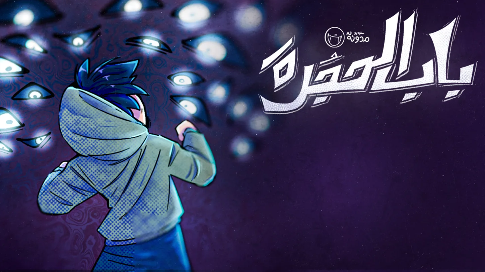
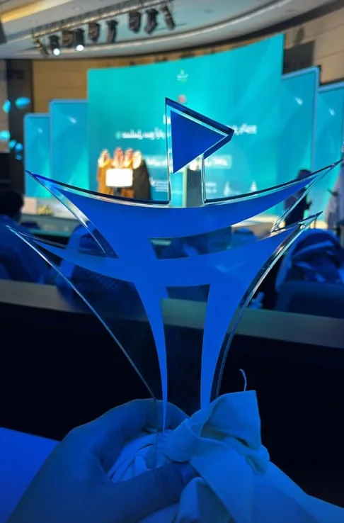
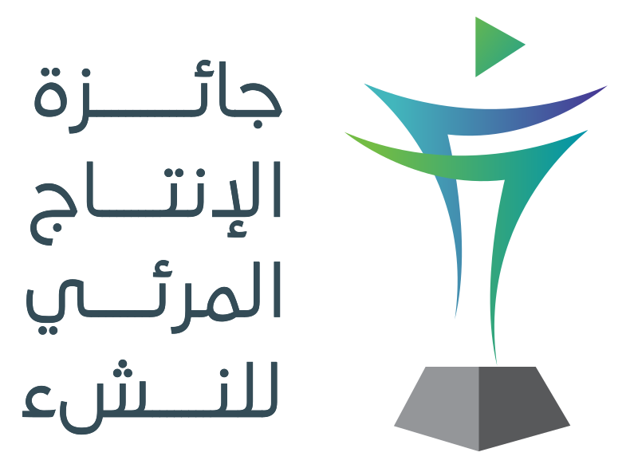
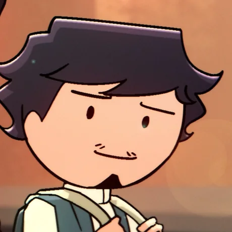
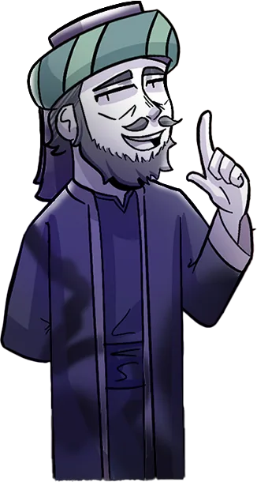
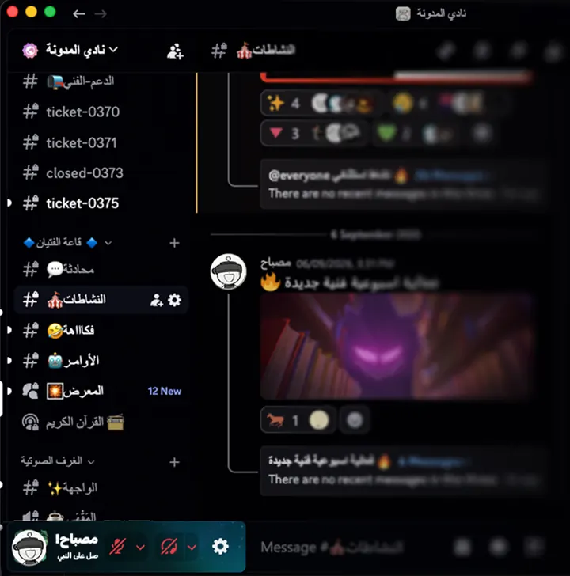

قصة مصورة · اقرأها الآنتظن أن بابك مغلق، لكن هل جربت فتحه حقًا؟ شاهد التشويقة الرسمية، واكتشف ما وراءه.
الحكاية كاملة في ٤٣ صفحة.

شارك معناباب الحجرةقضية سمرقند

قصة مصورة · اقرأها الآنتظن أن بابك مغلق، لكن هل جربت فتحه حقًا؟ شاهد التشويقة الرسمية، واكتشف ما وراءه.
الحكاية كاملة في ٤٣ صفحة.
أنيميشنإخراجكتابةتصميم صوت
نحن استوديو أنيميشن عربي نصنع الأفلام القصيرة والمسلسلات، ونبني عوالمًا قصصية متكاملة مثل العالم الأكبر الحاضن لكل هذه العوالم: عالم المدونة.
بدأت الحكاية عام ٢٠١٧، بقصة واحدة نُشرت على يوتيوب. ومنذ ذلك الحين، اتسع العالم إلى أكثر من ١١٥ عملًا، تجاوزت مشاهداتها مليونًا ونصف المليون، ونما معها فريق يعمل على كل مشروع من فكرته الأولى حتى آخر إطار فيه.
نؤمن أن للقصص العربية مكانًا بين القصص التي نشأنا عليها. لذلك نصنع حكايات نودّ لو رأيناها ونحن صغار؛ حكايات عربية، تُكتب بعناية، وتُروى بالرسوم المتحركة، وتترك وراءها عالمًا يستحق أن يُكتشف.
قضية سمرقندغمامباب الحجرةاللص التقيفصل عجيبالقرد والغيلم
كل عمل هنا كُتب ورُسم وحُرّك داخل الاستوديو. اسحب الشريط أو مرر عليه ليتوقف، واضغط أي عمل لتدخل عالمه.
٦ أعمال من ٢٠٢٤ إلى ٢٠٢٦. اسحب الشريط، أو اختر عملًا لتدخل عالمه.
٣٧٫٤ ألف مشترك٢٫٩ مليون مشاهدة
هذا ما كتبه الناس تحت أعمالنا. اسقط معنا بينها.
يوتيوبإنستغرامتيك توكديسكورد
هذه الأرقام ليست مجرد أرقام؛ وراءها مشاهدون اختاروا أن يتابعوا ما نصنعه.
وبين ما صنعناه، كأس المركز الثاني في جائزة الإنتاج المرئي للنشء، الفائز بها فيلم غمام.



انشراقترحادعم
إن كنت تريد أن تكون جزءًا من رحلة المدونة، فهناك أكثر من طريقة لدعم ما نصنعه ومساعدة هذا العالم على الوصول إلى جمهور أوسع.

نادي المدونةديسكورديوتيوبإنستغرامتيك توك
نادي المدونة مجتمع على ديسكورد، يضم ١٬٢٨٤ عضوًا، وفيه أكثر من مجرد الحديث عن أعمال المدونة.
فعاليات وتحديات أسبوعية، ومساحات للنقاش والتعارف، وأقسام مخصصة للشباب والفتيات، إلى جانب مجتمع يتابع أعمالنا ويشارك في بعض مراحلها.
